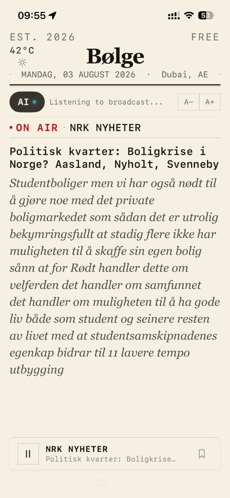
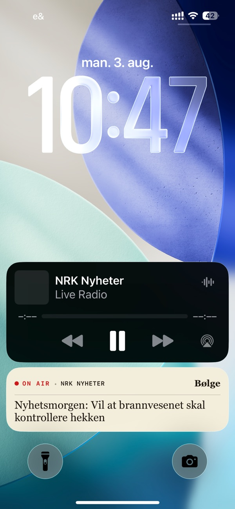
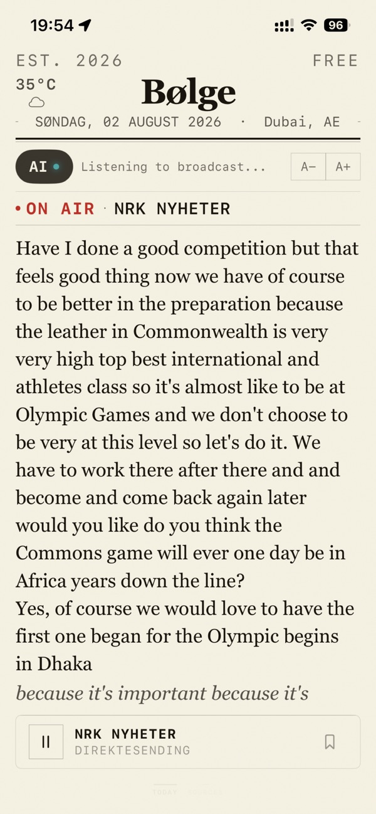
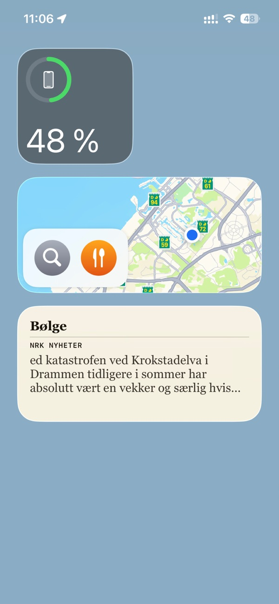
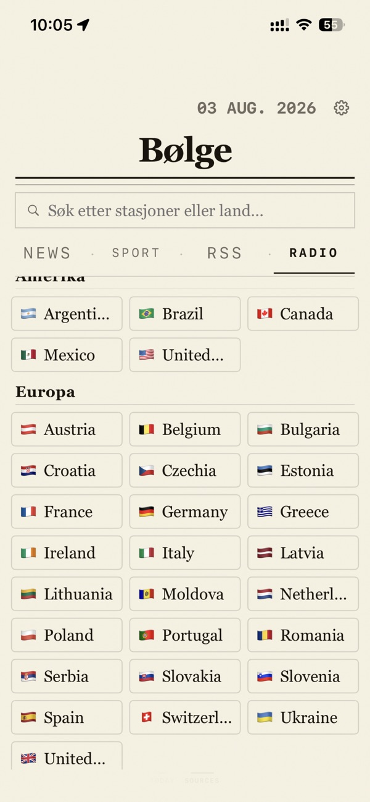
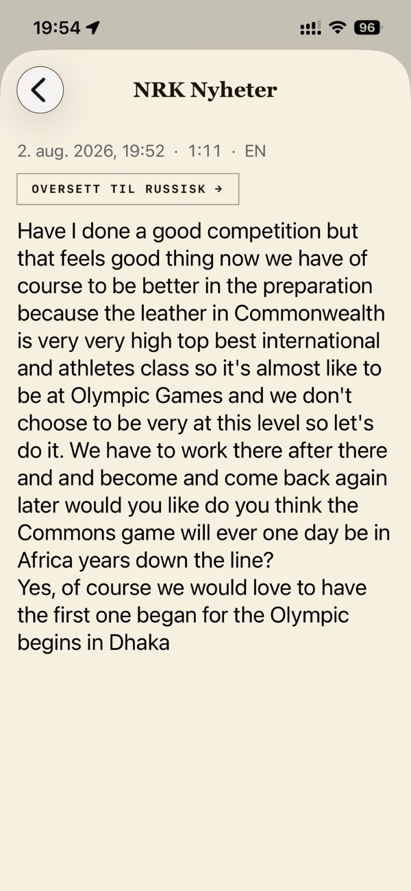

iPhone · Free · In the App Store
Radio you can read.
Tune in to a news or sports station and the words appear on screen as they are spoken — as real sentences, with capital letters and punctuation. It all happens on the device using Apple's speech frameworks: no audio is recorded or uploaded, and no account is needed.






Radio playback is free and stays free.
Bølge collects no personal data. Transcription and translation run locally on your device; transcripts never leave it and can be deleted at any time.
Swift, SwiftUI, AVFoundation and Apple's Speech framework, live stream handling, local storage and multi-language support. The station catalogue is open and updated without an app update — pull requests are welcome.
Download on the App Store Station catalogue on GitHub Privacy policy Support